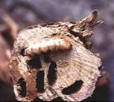
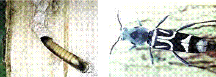

| Home |
| PEST OF COFFEE |
mAJOR PESTES |
| 1. White stem borer |
| 2. Red borer |
| 3. Shot hole borer |
| 4. Berry borer |
| 5. Green scale |
mINOR PESTES |
| 1. Mealy bug |
| Questions |
| Download Notes |
COFFEE :: MAJOR :: WHITE STEM BORER
1. White stem borer: Xylotrechus quadripes (Cerambycidae : Coleoptera)
Distribution and status
White stem borer is the most serious pest of Arabica coffee in India. It occurs in China, Thailand, Sri Lanka and Vietnam.
Host range
Arabica coffee is the most preferred and principal host plant. Alternate host plants include Robusta tree coffee, teak, Oleadioica etc. However, borer usually does not breed in these plants.
Damage symptoms
Presence of ridges on the stem; yellowing of leaves. Grubs bores into the branches and cause wilting and occasional drying of plants. Young plants (7 to 8 years old) attacked by the borer may die in a year, while older plants withstand the attack for a few seasons. However, such plants are less productive, yielding more of floats.
|  |
Bionomics
Egg period 10 days, grub period 10 months, pupal period 30 days. Grub white or yellowish with anterior end broader and tapering towards tail end. Adult is a black, elongate beetle with grey pubescence on the head, thorax and elytra. Characteristic white markings are seen on the elytra.
|  |
Management
- Arabica coffee grown under inadequate shade is highly prone to attack. Provide optimum shade.
- Trace the infested plants prior to the adult flight periods (March - September) by tracing the ridges on the stem. Avoid injuries on stem and roots.
- Uprooted stem / plants should not be heaped inside the plantations.
- Remove the loose scaly barks of main stem and primaries using coir glove or coconut husk to remove cracks and crevices on which eggs are normally deposited. Do not use any sharp implements. Spray and swab the main stem and thick primaries once in April- May and October - December with Lindane 20 EC 1.25 lit + 200 ml Teepol in 500 L water at the time of peak adult activity (March and September). NSKE 5% also can be applied frequently.
- Spray Beauveria bassiana available as a wettable powder formulation